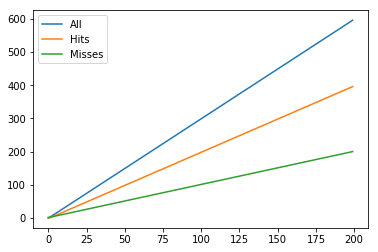
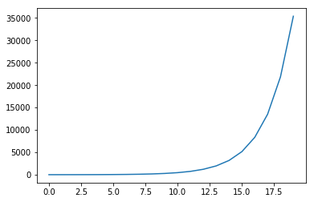
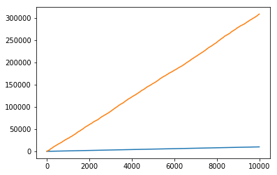
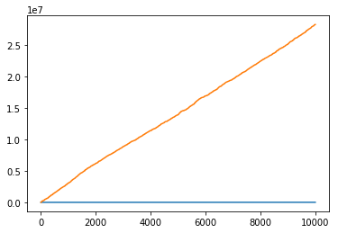

LRU Caching
Caching is an invaluable tool for lowering the stress of repeated computes on your expensive functions, if you anticipate calling it with a relatively-narrow set of arguments. I read about it in the context of model.predict() calls, but wanted to lean on a more canonical example to show the how performance compares, caching vs non. The code is lifted and altered from the functools.lru_cache() documentation.
By Example
Below, I’ve got two identical implementations for recursively serving up Fibonacci numbers– the only difference being that one of them counts the number of times the function is called, and the other caches the results its seen for later use.
from functools import lru_cache
@lru_cache(maxsize=64)
def fib(n):
if n < 2:
return n
else:
return fib(n-1) + fib(n-2)fib_call_count = 0
def fib_no_cache(n):
global fib_call_count
fib_call_count += 1
if n < 2:
return n
else:
return fib_no_cache(n-1) + fib_no_cache(n-2)Speed
Without caching, fib(20) runs on the order of milliseconds
%%timeit
fib_no_cache(20)2.91 ms ± 51.3 µs per loop (mean ± std. dev. of 7 runs, 100 loops each)
With caching, it’s measured instead in nanoseconds, which several orders of magnitude faster (10^-3) vs (10^-9)
%%timeit
fib(20)56.5 ns ± 0.677 ns per loop (mean ± std. dev. of 7 runs, 10000000 loops each)
This alone is probably endorsement enough to use @lru_cache() where applicable.
Call Efficiency
We can get a good understanding of the increase in efficiency by inspecting some of the utilities functools gives us.
On its own, a user-defined function doesn’t come with anything attached to it, besides a host of __dunder__ methods.
def blank_function():
pass
[x for x in blank_function.__dir__() if x.find('__') == -1][]
On the other hand, we can see that functions implemented under the @functools.lru_cache() decorator, get attached with a couple functions to interface with the cache.
[x for x in fib.__dir__() if x.find('__') == -1]['cache_info', 'cache_clear']
In practice, we can use this function to inspect how much work is going on under the hood.
At start, the namedtuple shows that:
hits=0: The cache hasn’t provided a shortcut yetmisses=0: Nothing has been cached yetmaxsize=64: The number of values that will be cachedcurrsize=0: Similar tomisses, this is how many values have been cached.
The key difference here is that currsize will only ever get as big as maxsize. At that point, it will drop the oldest cached call to fib(), as implied by the Last Recently Used in lru_cache().
fib.cache_clear()
print(fib.cache_info())CacheInfo(hits=0, misses=0, maxsize=64, currsize=0)
Then, if we call our cached Fibonacci sequence, we can inspect how it’s leveraging its cache.
for i in range(5):
print(f"Fib({i}) =", fib(i))
print(fib.cache_info(), '\n')Fib(0) = 0
CacheInfo(hits=0, misses=1, maxsize=64, currsize=1)
Fib(1) = 1
CacheInfo(hits=0, misses=2, maxsize=64, currsize=2)
Fib(2) = 1
CacheInfo(hits=2, misses=3, maxsize=64, currsize=3)
Fib(3) = 2
CacheInfo(hits=4, misses=4, maxsize=64, currsize=4)
Fib(4) = 3
CacheInfo(hits=6, misses=5, maxsize=64, currsize=5)
Pausing here to remark on what we’re seeing.
The first print statement is self-explanitory, but look what’s happening when we print out successive fib.cache_info()s:
- Every time we call
fib()with a value not yet seen,missesgets incremented by 1. - Because of the recursive nature of the algorithm, every time we get a new value for
n, we get two new increments inhits(Look at the function defintion.fib(4)callsfib(3)andfib(2). But because we cached these results, they’re simply returned– we don’t then go on to perform their recursive calls.)
Moving on…
print(fib(6))
print(fib.cache_info())8
CacheInfo(hits=9, misses=7, maxsize=64, currsize=7)
print(fib(7))
print(fib.cache_info())13
CacheInfo(hits=11, misses=8, maxsize=64, currsize=8)
You get the idea.
At Scale
Finally, I want to show what happens when we take multiple, successive values of fib()
%pylab inline
fib.cache_clear()
operations = []
for i in range(200):
fib(i)
hits, misses = fib.cache_info()[:2]
operations.append((hits, misses, hits+misses))
operations = np.array(operations)Populating the interactive namespace from numpy and matplotlib
In the cached case, the growth is steady and linear going from 0 to 200.
fig, ax = plt.subplots()
len_x = len(operations)
ax.plot(range(len_x), operations[:, 2], label='All')
ax.plot(range(len_x), operations[:, 0], label='Hits')
ax.plot(range(len_x), operations[:, 1], label='Misses')
ax.legend();
By the time we’ve called fib(200), we’ve done 596 operations– 200 new runs and 396 cache lookups.
operations[-1]array([396, 200, 596])
Compare that to the non-cached case, ran on 10% of the records. World of difference.
fib_call_count = 0
fib_call_counts = []
for i in range(20):
fib_no_cache(i)
fib_call_counts.append(fib_call_count)
print(fib_call_count)35400
Sixty times as many operations, on 10% of the top-level calls.
fib_call_count / operations[-1, -1]59.395973154362416
fig, ax = plt.subplots()
len_x = len(fib_call_counts)
ax.plot(range(len_x), fib_call_counts);
In the wild
Now, suppose that we’ve got some application that randomly calls fib, per a uniform distribution between 1 and 10. And over the course of a day, it gets called 10 thousand times.
np.random.seed(0)
ten_k_calls = np.random.randint(1, 10, size=10000)Then, comparing the relative operations between the cached and non-cached implementations, we have
fib_call_count = 0
fib.cache_clear()
cache = []
no_cache = []
for call in ten_k_calls:
fib(call)
fib_no_cache(call)
hits, misses = fib.cache_info()[:2]
cache.append(hits + misses)
no_cache.append(fib_call_count)Which leads to an enormous difference.
fig, ax = plt.subplots()
ax.plot(range(10000), cache)
ax.plot(range(10000), no_cache);
fib_call_count / 1000030.8738
sum(fib.cache_info()[:2]) / 100001.0016
Now look what happens when we double the output range of our random number generator
np.random.seed(0)
ten_k_calls = np.random.randint(1, 21, size=10000)Then, comparing the relative operations between the cached and non-cached implementations, we have
fib_call_count = 0
fib.cache_clear()
cache = []
no_cache = []
for call in ten_k_calls:
fib(call)
fib_no_cache(call)
hits, misses = fib.cache_info()[:2]
cache.append(hits + misses)
no_cache.append(fib_call_count)Which leads to an enormous difference.
fig, ax = plt.subplots()
ax.plot(range(10000), cache)
ax.plot(range(10000), no_cache);
fib_call_count / 100002825.3216
sum(fib.cache_info()[:2]) / 100001.0038
This tangent is probably more a lesson in algorithm complexity than anything. Hopefully though, it’s also a lesson in how that complexity can be mitigated by good use of @functools.lru_cache()